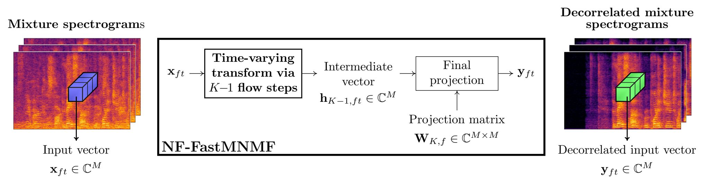

NF-FastMNMF
A. A. Nugraha, K. Sekiguchi, M. Fontaine, Y. Bando, and K. Yoshii, "Flow-Based Fast Multichannel Nonnegative Matrix Factorization for Blind Source Separation," in Proc. IEEE Int. Conf. Acoust., Speech, Signal Process., Singapore, Singapore, 2022, pp. 501-505.
Abstract
This paper describes a blind source separation method for multichannel audio signals, called NF-FastMNMF, based on the integration of the normalizing flow (NF) into the multichannel nonnegative matrix factorization with jointly-diagonalizable spatial covariance matrices, a.k.a. FastMNMF. Whereas the NF of flow-based independent vector analysis, called NF-IVA, acts as the demixing matrices to transform an $M$-channel mixture into $M$ independent sources, the NF of NF-FastMNMF acts as the diagonalization matrices to transform an $M$-channel mixture into a spatially-independent $M$-channel mixture represented as a weighted sum of $N$ source images. This diagonalization enables the NF, which has been used only for determined separation because of its bijective nature, to be applicable to non-determined separation. NF-FastMNMF has time-varying diagonalization matrices that are potentially better at handling dynamical data variation than the time-invariant ones in FastMNMF. To have an NF with richer expression capability, the dimension-wise scalings using diagonal matrices originally used in NF-IVA are replaced with linear transformations using upper triangular matrices; in both cases, the diagonal and upper triangular matrices are estimated by neural networks. The evaluation shows that NF-FastMNMF performs well for both determined and non-determined separations of multiple speech utterances by stationary or non-stationary speakers from a noisy reverberant mixture.

Reference
A. A. Nugraha, K. Sekiguchi, M. Fontaine, Y. Bando, and K. Yoshii, “Flow-Based Fast Multichannel Nonnegative Matrix Factorization for Blind Source Separation,” in Proc. IEEE Int. Conf. Acoust., Speech, Signal Process., Singapore, Singapore, 2022, pp. 501-505, doi: 10.1109/ICASSP43922.2022.9747718.
Audio Samples
- For the listening purpose, all audio files are stereo obtained by taking the first two channels from the estimated multichannel source images.
- The order of the separated sources may not be the same as that of the reference sources because we do not apply a source permutation solver.
Stationary Data
PCAFETER_12dB -- 447o030b_446o0315_444o030t
| **Mixture** | **Sources** |
|---|---|
| **Methods** | **3 microphones** | **4 microphones** | **7 microphones** |
|---|---|---|---|
| **IVA-BP** | n/a | ||
| **NF-IVA** _- $\mathbf{W}\_{k^{\prime\prime},ft}$: diagonal_ _- flow block number: 1_ | n/a | ||
| **NF-IVA** _- $\mathbf{W}\_{k^{\prime\prime},ft}$: diagonal_ _- flow block number: 2_ | n/a | ||
| **NF-IVA** _- $\mathbf{W}\_{k^{\prime\prime},ft}$: upper triangular_ _- flow block number: 1_ | n/a | ||
| **NF-IVA** _- $\mathbf{W}\_{k^{\prime\prime},ft}$: upper triangular_ _- flow block number: 2_ | n/a | ||
| **FastMNMF-BP** | |||
| **NF-FastMNMF** _- $\mathbf{W}\_{k^{\prime\prime},ft}$: diagonal_ _- flow block number: 1_ | |||
| **NF-FastMNMF** _- $\mathbf{W}\_{k^{\prime\prime},ft}$: diagonal_ _- flow block number: 2_ | |||
| **NF-FastMNMF** _- $\mathbf{W}\_{k^{\prime\prime},ft}$: upper triangular_ _- flow block number: 1_ | |||
| **NF-FastMNMF** _- $\mathbf{W}\_{k^{\prime\prime},ft}$: upper triangular_ _- flow block number: 2_ |
(back to the top of this section)
Non-stationary Data
PCAFETER_12dB -- 447o030b_446o0315_444o030t
| **Mixture** | **Sources** |
|---|---|
| **Methods** | **3 microphones** | **4 microphones** | **7 microphones** |
|---|---|---|---|
| **IVA-BP** | n/a | ||
| **NF-IVA** _- $\mathbf{W}\_{k^{\prime\prime},ft}$: diagonal_ _- flow block number: 1_ | n/a | ||
| **NF-IVA** _- $\mathbf{W}\_{k^{\prime\prime},ft}$: diagonal_ _- flow block number: 2_ | n/a | ||
| **NF-IVA** _- $\mathbf{W}\_{k^{\prime\prime},ft}$: upper triangular_ _- flow block number: 1_ | n/a | ||
| **NF-IVA** _- $\mathbf{W}\_{k^{\prime\prime},ft}$: upper triangular_ _- flow block number: 2_ | n/a | ||
| **FastMNMF-BP** | |||
| **NF-FastMNMF** _- $\mathbf{W}\_{k^{\prime\prime},ft}$: diagonal_ _- flow block number: 1_ | |||
| **NF-FastMNMF** _- $\mathbf{W}\_{k^{\prime\prime},ft}$: diagonal_ _- flow block number: 2_ | |||
| **NF-FastMNMF** _- $\mathbf{W}\_{k^{\prime\prime},ft}$: upper triangular_ _- flow block number: 1_ | |||
| **NF-FastMNMF** _- $\mathbf{W}\_{k^{\prime\prime},ft}$: upper triangular_ _- flow block number: 2_ |